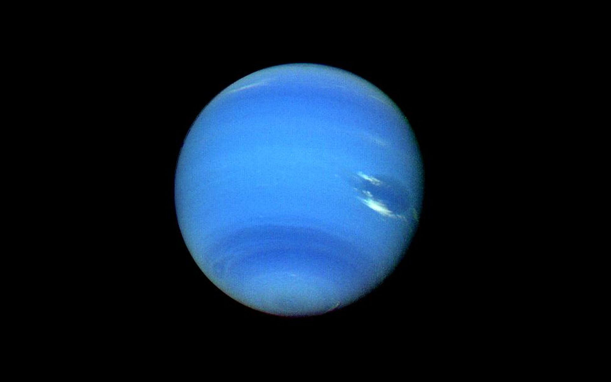
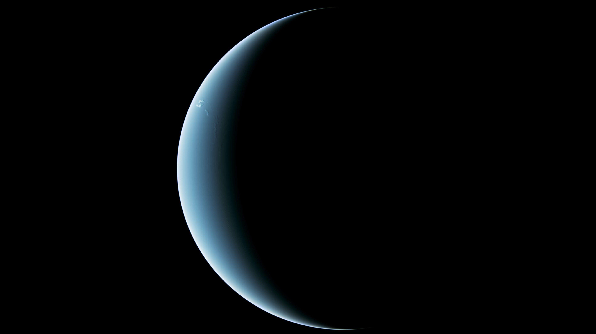
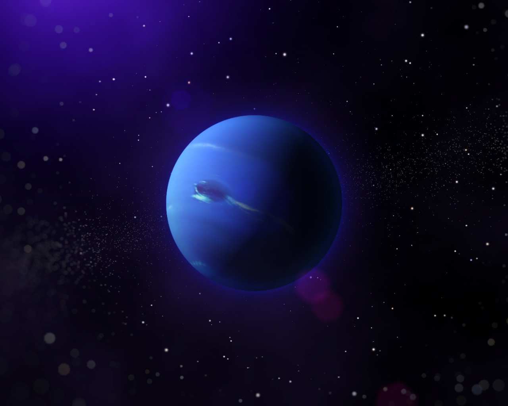
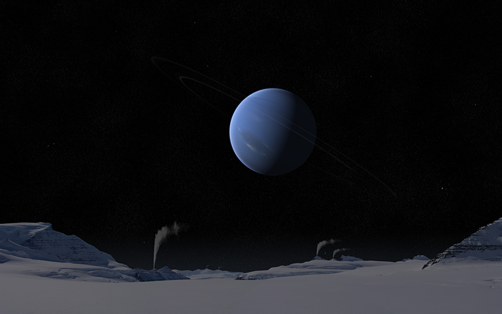
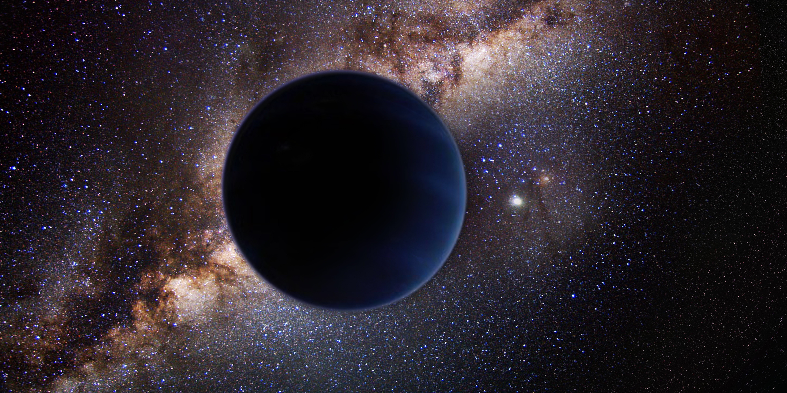
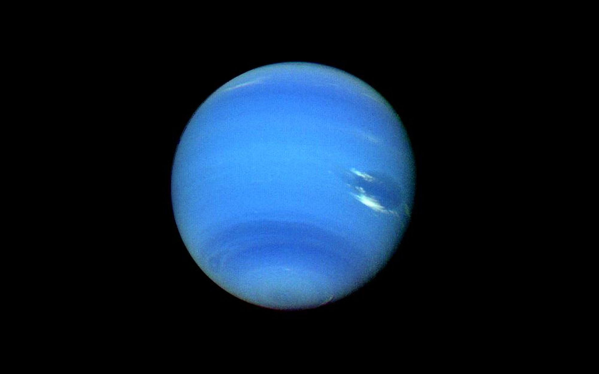
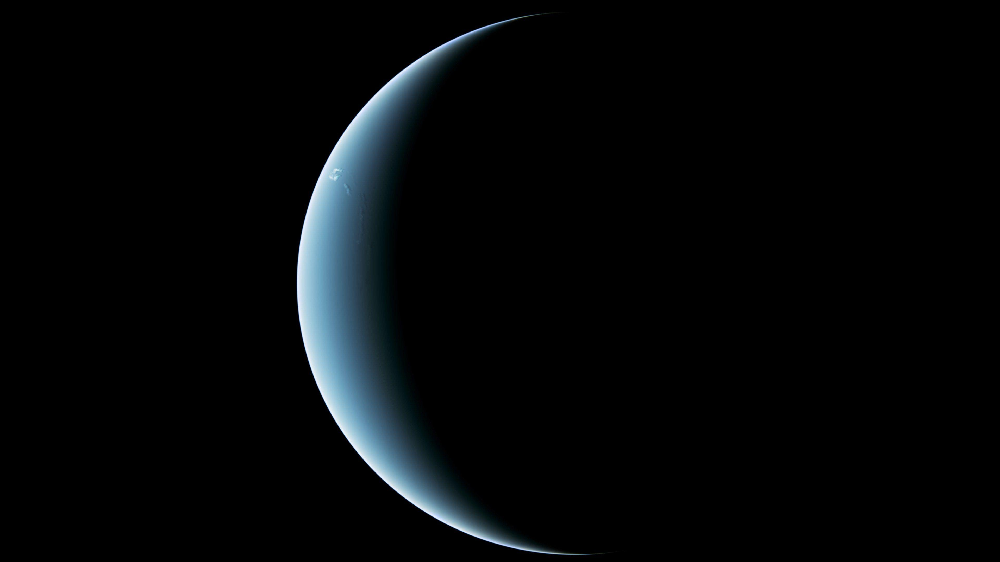
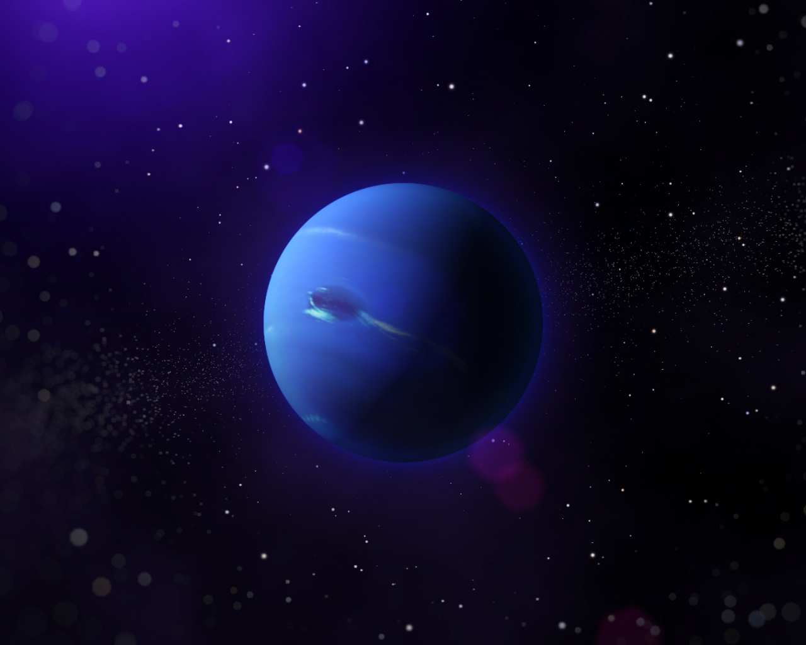
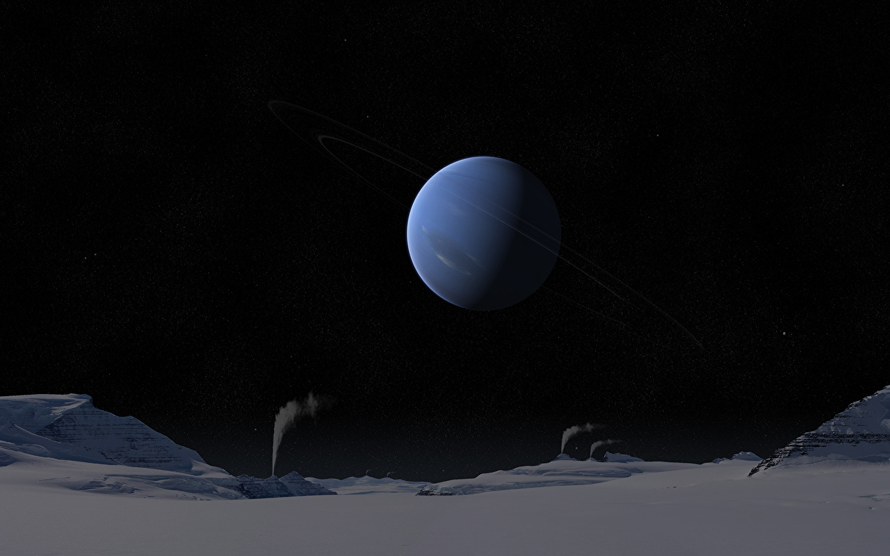
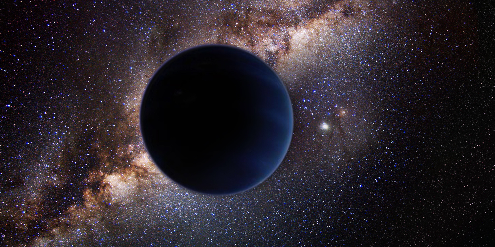

| Equatorial circumference | 96,800 miles |
|---|---|
| Surface Area | 29,300,000,000 square miles |
| Density | 1.64 g/cm3 | Volume | 62,500,000,000,000 km3 |
| Radius | 15,299 miles |
| Mass | 1.024E26 kg |
About Neptune
Neptune, the eighth and farthest known planet from the Sun, is an ice giant in our solar system. It features a dynamic and stormy atmosphere with prominent cloud bands, and its distinctive blue color is due to the presence of methane. Neptune has a strong and tilted magnetic field, and it is known for the Great Dark Spot, a massive storm system. The planet has a system of rings, though they are faint compared to those of Saturn. Neptune is accompanied by a diverse collection of moons, including Triton, a unique moon with geysers of nitrogen. It was discovered in 1846 through mathematical predictions before being directly observed.
Composition
Neptune, the outermost planet in our solar system, is primarily composed of hydrogen and helium in its atmosphere, similar to other gas giants. Methane gives Neptune its distinct blue color, while ammonia, water vapor, and trace gases contribute to its atmospheric composition. Beneath the atmosphere, Neptune likely has a compositionally diverse interior with a rocky core surrounded by layers of icy and gaseous materials. Ongoing research aims to deepen our understanding of Neptune's composition and structure.
Structure
The sun is made up of six layers: core, radiative zone, transition zone, convective zone, photosphere, chromosphere, and corona.
A. Atmosphere
Neptune has a thick atmosphere primarily composed of hydrogen and helium, with traces of methane, ammonia, and other compounds. The atmosphere features prominent cloud bands, storms, and winds, including the notable Great Dark Spot and other storm systems.
B. Core
It is hypothesized that Neptune has a small, rocky core at its center, composed of heavier elements. This core is surrounded by layers of icy and rocky materials.
C. Icy Mantle
Beneath the atmosphere and surrounding the potential rocky core, there may be an icy mantle composed of water, ammonia, and methane ices.
D. Magnetic Field
Neptune possesses a strong and tilted magnetic field, which is not perfectly aligned with its rotation axis. This magnetic field is thought to be generated by processes within the planet's interior.
E. Rings
Neptune has a faint system of rings, though they are not as prominent as those of Saturn.
Media
Gallery
 








